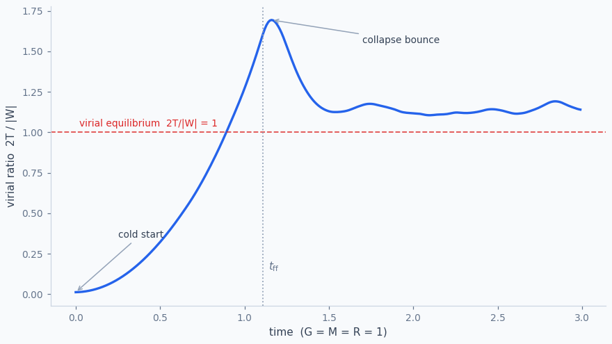
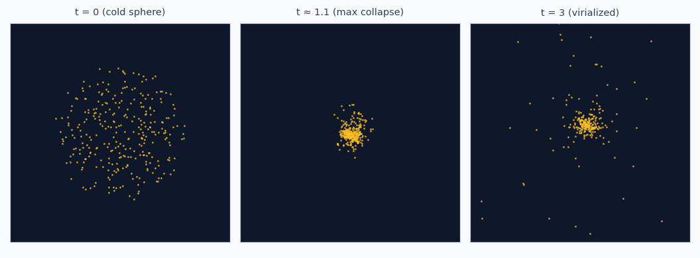

Drop a cold star cluster. Watch it find its feet.
Violent relaxation as a stress test for AMBER — and a race against Mesa and AgentPy.
I built AMBER so agent models could grow without dying in a pure-Python loop — the whole population lives in a Polars table (paper). The question is always: does that still feel like modelling when the rules get nasty?
Gravity is a good nasty. Every star pulls on every other star, all the time. There is no neat neighbourhood graph to hide behind. If your framework thinks in objects, you pay for that N² loop in the interpreter. If it thinks in columns, you hand the same loop to NumPy and go make coffee. So I built the same cold-collapse cluster three times — AMBER, Mesa, AgentPy — same physics, same seed, and let them race.
The collapse, in plain language
Sprinkle a few hundred stars in a ball and give them almost no speed. With nothing to hold them up, they fall in. They overshoot, slosh through the middle, fling a few friends into a faint halo, and eventually settle into a compact core that is roughly in balance — what physicists call virial equilibrium. The messy middle act, where energies get reshuffled by a thrashing potential, is Lynden-Bell’s violent relaxation.
One number tells the story: the virial ratio Q = 2T/|W|. Cold start ≈ 0. Bounce spikes above 1. Settled cluster hangs around 1. Ours opens at 0.013, hits ~1.7 at the bounce, then rings down:


Same physics, three dialects
Fair race: identical initial conditions, identical leapfrog, identical softened gravity. If the answers disagree, that is a framework bug, not a universe bug. Units are the usual toy set — G = M = R = 1.
import numpy as np
N, DT, EPS2, SEED = 300, 0.01, 0.05**2, 42
M = 1.0 / N # per-star mass
def initial_conditions(seed=SEED):
"""Uniform sphere, tiny isotropic velocities (cold start)."""
rng = np.random.default_rng(seed)
r = rng.random(N) ** (1 / 3)
costh = rng.uniform(-1, 1, N)
phi = rng.uniform(0, 2 * np.pi, N)
sinth = np.sqrt(1 - costh**2)
x, y, z = r * sinth * np.cos(phi), r * sinth * np.sin(phi), r * costh
v = rng.normal(0, 0.05, (3, N))
return x, y, z, v[0], v[1], v[2]
def accelerations(x, y, z):
"""Softened all-pairs gravity as one (N, N) broadcast."""
dx = x[None, :] - x[:, None]
dy = y[None, :] - y[:, None]
dz = z[None, :] - z[:, None]
inv_r3 = (dx**2 + dy**2 + dz**2 + EPS2) ** -1.5
np.fill_diagonal(inv_r3, 0.0)
return (M * np.sum(dx * inv_r3, axis=1),
M * np.sum(dy * inv_r3, axis=1),
M * np.sum(dz * inv_r3, axis=1))
def virial_ratio(x, y, z, vx, vy, vz):
T = 0.5 * M * np.sum(vx**2 + vy**2 + vz**2)
dx = x[None, :] - x[:, None]
dy = y[None, :] - y[:, None]
dz = z[None, :] - z[:, None]
inv_r = (dx**2 + dy**2 + dz**2 + EPS2) ** -0.5
np.fill_diagonal(inv_r, 0.0)
W = -0.5 * M * M * np.sum(inv_r)
return float(2 * T / abs(W))How it looks in AMBER
With the latest AMBER release
(pip install -U "ambr>=0.4.4"), the stars are rows in a table. This post targets
0.4.4.
Each step borrows the dense columns, does the leapfrog in NumPy, and commits them together. That is
AMBER's tensor lane for interaction-heavy O(N²) kernels.
import ambr as am
print(am.__version__) # 0.4.4+
# am.print_status() # optional: GPU? which speed lane?
class AmberStarCluster(am.Model):
# declarative per-step metric -> results.model (RunResults)
model_reporters = {
'virial': lambda m: virial_ratio(
*m.agents.numpy('x', 'y', 'z', 'vx', 'vy', 'vz')),
}
def setup(self):
x, y, z, vx, vy, vz = initial_conditions()
self.add_agents(N, x=x, y=y, z=z, vx=vx, vy=vy, vz=vz)
def step_vectorized(self):
# 0.4.4 tensor lane: borrow dense arrays for the O(N²) kernel
x, _ = self.agents.borrow('x'); y, _ = self.agents.borrow('y')
z, _ = self.agents.borrow('z'); vx, _ = self.agents.borrow('vx')
vy, _ = self.agents.borrow('vy'); vz, _ = self.agents.borrow('vz')
# leapfrog: kick - drift - kick
ax, ay, az = accelerations(x, y, z)
vx = vx + 0.5 * DT * ax; vy = vy + 0.5 * DT * ay; vz = vz + 0.5 * DT * az
x = x + DT * vx; y = y + DT * vy; z = z + DT * vz
ax, ay, az = accelerations(x, y, z)
vx = vx + 0.5 * DT * ax; vy = vy + 0.5 * DT * ay; vz = vz + 0.5 * DT * az
# atomic tensor-lane write-back
self.agents.commit(x=x, y=y, z=z, vx=vx, vy=vy, vz=vz)
# 0.4.4 makes the vectorized CPU lane explicit; show_progress is off by default
model = AmberStarCluster({'steps': 300, 'seed': SEED})
results = model.cpu(mode='vectorized').run()
print(results.model['virial'][-1]) # ~1.14; also results['model']
Notes on the 0.4.4 API: add_agents(n, **columns) bulk-creates the population (array
kwargs length n, scalars broadcast). The explicit step_vectorized() hook pairs with
cpu(mode='vectorized'); step() remains a compatibility fallback. For this
dense O(N²) calculation, borrow() / commit() is AMBER's tensor lane.
model_reporters evaluates once per step into a RunResults object — access
metrics as results.model or results['model']. Columnar filters use
agents.where(...) / agents.at[ids]. There is no per-agent loop anywhere.
The same model in Mesa
Mesa 3.x is the classic object-per-agent design: each star is an object, and the model tells the population to run methods. One subtlety — with in-place per-agent updates, you must split the step into phases (compute all forces first, then integrate) or agents late in the iteration order would feel forces from positions that were already moved:
import mesa
class MesaStar(mesa.Agent):
def __init__(self, model, x, y, z, vx, vy, vz):
super().__init__(model)
self.x, self.y, self.z = x, y, z
self.vx, self.vy, self.vz = vx, vy, vz
self.ax = self.ay = self.az = 0.0
def compute_force(self):
ax = ay = az = 0.0
for other in self.model.agents: # O(N) pure-Python loop,
if other is self: # inside an O(N) dispatch
continue # -> O(N^2) per phase
dx = other.x - self.x
dy = other.y - self.y
dz = other.z - self.z
inv_r3 = (dx*dx + dy*dy + dz*dz + EPS2) ** -1.5
ax += M * dx * inv_r3
ay += M * dy * inv_r3
az += M * dz * inv_r3
self.ax, self.ay, self.az = ax, ay, az
def kick(self):
self.vx += 0.5 * DT * self.ax
self.vy += 0.5 * DT * self.ay
self.vz += 0.5 * DT * self.az
def drift(self):
self.x += DT * self.vx
self.y += DT * self.vy
self.z += DT * self.vz
class MesaStarCluster(mesa.Model):
def __init__(self, seed=SEED):
super().__init__(seed=seed)
x, y, z, vx, vy, vz = initial_conditions()
for i in range(N):
MesaStar(self, x[i], y[i], z[i], vx[i], vy[i], vz[i])
def step(self):
self.agents.do('compute_force') # forces at t
self.agents.do('kick')
self.agents.do('drift')
self.agents.do('compute_force') # forces at t + dt
self.agents.do('kick')…and in AgentPy
AgentPy reads almost identically to Mesa here; its AgentList broadcasts method calls
(self.stars.kick()), which is pleasant, but each call still dispatches into a Python
loop over objects:
import agentpy as ap
class APStar(ap.Agent):
def setup(self, x=0., y=0., z=0., vx=0., vy=0., vz=0.):
self.x, self.y, self.z = x, y, z
self.vx, self.vy, self.vz = vx, vy, vz
self.ax = self.ay = self.az = 0.0
# compute_force / kick / drift identical to the Mesa agent
...
class APStarCluster(ap.Model):
def setup(self):
x, y, z, vx, vy, vz = initial_conditions()
self.stars = ap.AgentList(self, N, APStar)
for i, star in enumerate(self.stars):
star.setup(x[i], y[i], z[i], vx[i], vy[i], vz[i])
def step(self):
self.stars.compute_force()
self.stars.kick()
self.stars.drift()
self.stars.compute_force()
self.stars.kick()
self.record('virial', self._virial())Do they even agree?
They should — same seed, same helpers — and they do. Virial trajectories match to about 3.6 × 10⁻¹⁵, which is float dust, not physics. Only after that check is it fair to time anything (same habit as AMBER’s own benchmarks).
Who finishes first
Three hundred stars, three hundred steps — the whole collapse above — one process, Apple Silicon:
| Framework | Architecture | Wall time | vs AMBER |
|---|---|---|---|
| AMBER (vectorized) | Columnar (Polars) + NumPy broadcast | 3.4 s | 1× |
| AgentPy 0.1.5 | Object per agent | 69 s | 20× |
| Mesa 3.3 | Object per agent | 75 s | 22× |
Watch the race
Numbers in a table are easy to shrug off, so here are the three actual runs replayed side by side. Each panel plays back the x–y positions recorded from that framework's own run (every 3rd step, diagnostics off). In Race mode, each panel advances at its framework's measured wall-clock speed — AMBER finishes its 300 steps in 1.2 s of compute while Mesa and AgentPy are still in free fall. In Synced mode the panels step together, so you can verify the trajectories are indistinguishable.
Wall-clock times measured on the runs shown (Python 3.11, Apple Silicon, simulation loop only): AMBER 1.19 s, AgentPy 30.9 s, Mesa 29.0 s for 300 steps at N = 300. Final-frame positions agree across frameworks to 2.4 × 10⁻¹⁴.
Two honest caveats. First, all-pairs gravity is O(N²) everywhere — AMBER doesn't change the
asymptotics, it changes the constant: the pair interactions run inside NumPy's C kernels instead of
the Python interpreter. At N = 3000 the AMBER run takes ~5.7 minutes, while the object-per-agent
versions extrapolate to roughly two hours (100× more pairs — we didn't wait). Second, this workload
is a best case for vectorization: fully global, fully regular. Models with irregular,
hard-to-vectorize behaviours are where Mesa and AgentPy's object model earns its keep — which is why
AMBER keeps a buffered object-oriented path (agent_class=, per-agent iteration) so you
can mix both styles in one model.
What I took from it
When the update is really “do the same thing to everyone,” columns win. Gravity is an extreme case; epidemiology and diffusion are friendlier ones. Keep the physics helpers boring and shared, check that the answers match, then compare clocks. AMBER’s extras — speed lanes, Numba, GPU ensembles — can wait for posts that need them.
The quieter sequel is already up: heavy stars sink, light stars leave. Same kitchen, slower heat.
To race it yourself, install AMBER 0.4.4 with
pip install -U "ambr>=0.4.4" mesa agentpy,
paste the helpers, and pick a dialect. Questions or AI/ML Engineer openings:
duyanhpham(at)outlook.com.